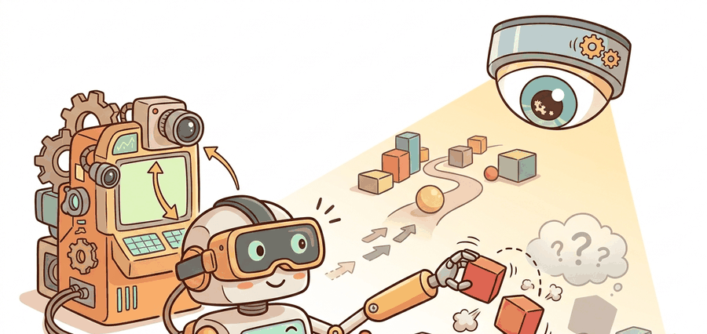

"The operator wanted depth perception. The robot delivered a network delay with excellent lighting."
A Stereoscopic Operator

VR and immersive teleoperation systems such as Open-TeleVision use active visual feedback and body-motion mapping to make remote robot control feel more embodied. The goal is not spectacle; the goal is better demonstrations through better operator perception.
Perception Loop
Teleoperation is a closed-loop control problem with a human inside the loop. The operator observes a rendered state $ ilde{o}_t$, chooses a command $u_t$, and receives delayed feedback $ ilde{o}_{t+\Delta}$. If stereoscopic feedback reduces pose uncertainty but increases delay, the system must quantify the tradeoff.
Useful immersive systems therefore log not only robot actions, but also headset pose, rendered camera stream, frame drops, hand tracking confidence, and command timestamps.
A practical budget decomposes delay as $\Delta t = \Delta t_{camera} + \Delta t_{encode} + \Delta t_{network} + \Delta t_{render} + \Delta t_{control}$. Optimizing only one term can leave the operator with a visually rich but dynamically stale world.
Immersive feedback earns its cost when it changes measurable collection quality: fewer failed grasps, faster corrections, better occlusion handling, or more diverse successful demonstrations under the same task protocol.
Start from Open-TeleVision or another maintained telepresence stack when possible. The stack handles headset streaming, active camera feedback, and hand retargeting so the research effort can focus on synchronization, safety interlocks, and data-quality labels.
The audit below treats frame drops and delay as episode labels. This is not a performance nicety; it determines whether the resulting demonstration should be considered expert data.
# Classify immersive teleoperation episodes using delay and visual stability.
# The labels help separate expert intent from interface-induced mistakes.
episodes = [
{"id": "vr001", "delay_ms": 72, "dropped_frames": 1, "tracking": 0.98},
{"id": "vr002", "delay_ms": 180, "dropped_frames": 9, "tracking": 0.81},
]
for episode in episodes:
stable_video = episode["dropped_frames"] <= 3 and episode["tracking"] >= 0.95
acceptable_delay = episode["delay_ms"] <= 100
label = "clean" if stable_video and acceptable_delay else "interface-risk"
print(episode["id"], label)The expected output routes vr002 away from clean training because multiple interface signals are weak at once. This is the central engineering point: immersive teleoperation data should preserve the quality of the operator's perceptual channel. If a policy later fails on an episode labeled interface-risk, the team should inspect video delay, dropped frames, and hand tracking before blaming the manipulation model.
Mechanism: Active Visual Feedback
Open-TeleVision-style systems change the information available to the operator. A fixed camera gives a passive view of the scene; active stereo feedback lets the operator move viewpoint, resolve occlusions, and align the robot body with task-relevant geometry. That extra perception can improve demonstrations for tasks such as opening drawers, threading tools, or reaching around clutter, where the critical state is not visible from one fixed camera.
Consider a specific case: an operator collecting drawer-opening demonstrations with a fixed overhead camera cannot see the handle recess from above, so every approach is estimated from an occluded view. Adding a head-mounted stereo camera lets the operator tilt the viewpoint 30 degrees downward, resolving the handle geometry and reducing failed grasp attempts from roughly 40% to under 10% in Open-TeleVision's reported evaluations on similar tabletop tasks. The information chain is direct: stereoscopic parallax resolves depth at 20 to 50 cm range, the operator sees the handle lip clearly, the approach angle improves, and the recorded wrist trajectory carries that improvement into the training set. The same benefit does not appear for tasks where the critical geometry is already visible from a fixed camera, which is why measuring per-task grasp success rate before and after adding immersive feedback is more useful than assuming it always helps. The cost is that active feedback adds a second policy-like behavior: the human chooses not only hand motion, but also where to look. A dataset that keeps headset pose and camera motion can later train or evaluate active perception policies. A dataset that stores only wrist images discards the reason immersion helped.
Giving the operator a headset so they can choose where to look is generous. Failing to record where they actually looked is the data-collection equivalent of handing someone a map, watching them navigate perfectly, and then filing only the destination.
Concrete Tool Anchors
A practical immersive stack usually combines several maintained layers. Open-TeleVision provides a reference design for immersive active visual feedback and imitation-learning data collection. ROS 2 or a similar robot middleware layer carries robot state, commands, emergency-stop state, and camera topics. WebRTC-style streaming or vendor headset SDKs carry the visual channel. A calibration tool such as Kalibr, OpenCV calibration routines, or the platform's own stereo calibration workflow records the geometry that makes depth perception meaningful.
The important engineering decision is where each timestamp is created. Camera capture time, network receive time, headset render time, hand-tracking time, and robot command time should all be recorded or reconstructable. Without those anchors, a replay can look smooth while hiding the delay that shaped the operator's actions.
| Check | Why It Matters | Evidence To Store |
|---|---|---|
| Stereo calibration | Depth errors alter grasp approach and contact timing. | Calibration version and reprojection error. |
| Headset pose | Active perception changes which visual evidence the operator used. | Head pose stream and camera selection. |
| Hand mapping | Human wrists and robot wrists do not share limits. | Retargeting map and saturation events. |
| Safety interlock | Immersion can hide physical workspace risks. | Deadman state, speed scale, and stop events. |
A VR operator may feel present in the robot body while the data stream is still delayed, compressed, or clipped by retargeting. Trust the synchronized logs over subjective smoothness.
Three failure modes appear repeatedly in immersive teleoperation deployments. First, latency above roughly 150 ms triggers predictive overcorrection: the operator moves the hand further than needed because the visual confirmation of contact arrives too late, producing jerky approach trajectories in the recorded data. Second, stereo calibration drift (common after headset bumps or thermal changes) introduces a systematic depth offset; grasp approaches in the resulting data are consistently too shallow or too deep, and the failure looks like a manipulation error rather than a calibration error until logs are inspected. Third, hand retargeting saturation, where the operator's wrist reaches a joint limit on the robot that the human hand does not feel, silently clips the intended motion; the stored action is not what the operator intended, and a policy trained on those clipped segments learns a truncated behavior. Checking retargeting saturation events per episode is the fastest way to catch the third failure before training.
For a cupboard-opening task, immersive feedback may help the operator move the camera to inspect handle geometry. The dataset should preserve that active gaze path because a learned policy may need a similar information-gathering behavior.
Open-TeleVision and related systems push toward high-bandwidth telepresence for robot data collection. A frontier question is whether active visual feedback produces better policy data per minute than simpler interfaces once hardware cost, operator training, and latency labels are included.
Would a replay viewer know where the operator looked, how delayed the video was, and whether hand retargeting saturated? If not, the immersive context has been lost.
Immersive teleoperation improves data when it improves operator state estimation and records the evidence needed to separate task errors from interface errors.
Design an evaluation comparing joystick and VR collection for one task. Keep the robot, task split, and success metric fixed, then add one interface-quality metric.
What's Next
Section 23.5 turns from interfaces to data quality gates: how to decide which episodes are train, validation, stress, repair, or discard.
Zhao, T. Z. et al. (2023). Learning Fine-Grained Bimanual Manipulation with Low-Cost Hardware.
Introduces ALOHA and ACT, making the connection between low-cost bimanual teleoperation, action chunking, and real-world manipulation data explicit.
A kinematically matched leader device study that directly compares teleoperation ergonomics and reliability against other low-cost interfaces.
Defines the handheld gripper approach, latency matching, and relative-trajectory action interface used in portable demonstration collection.
Cheng, X. et al. (2024). Open-TeleVision: Teleoperation with Immersive Active Visual Feedback.
A current reference for immersive visual feedback, active perception, and VR-style operator embodiment in data collection.
Hugging Face LeRobot Documentation.
Documents dataset conversion, policy training, and robot-control utilities that turn teleoperation logs into reusable learning artifacts.